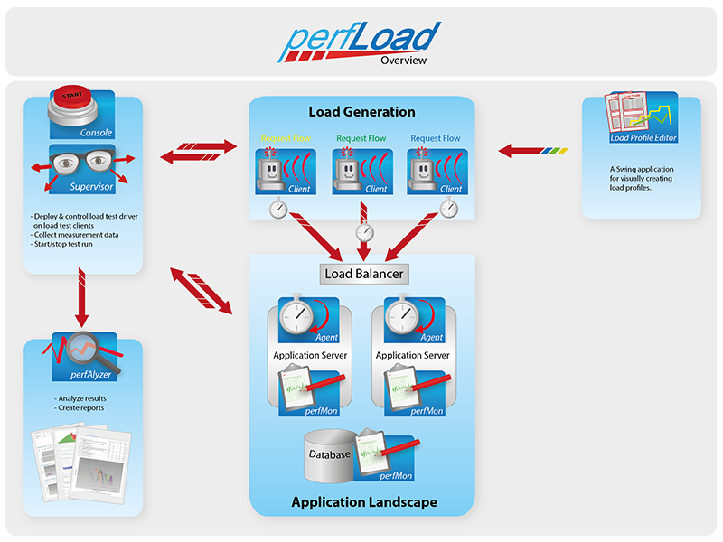
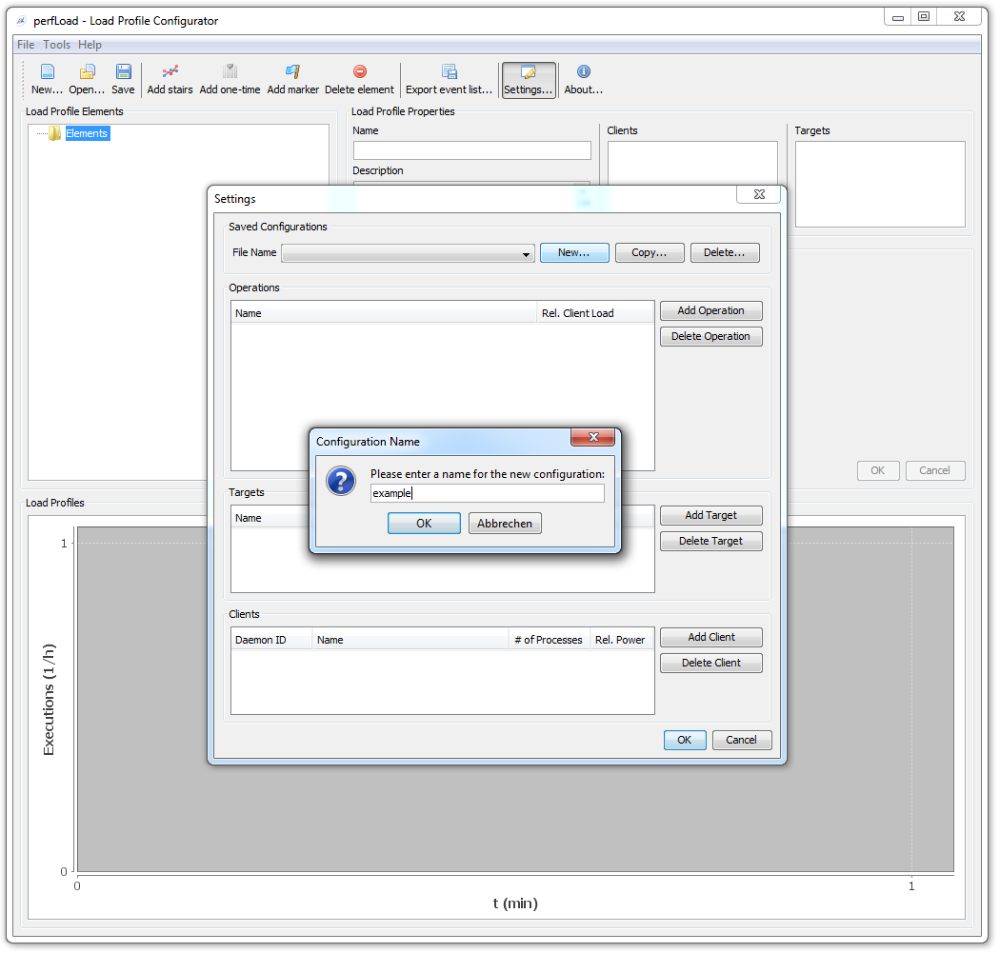
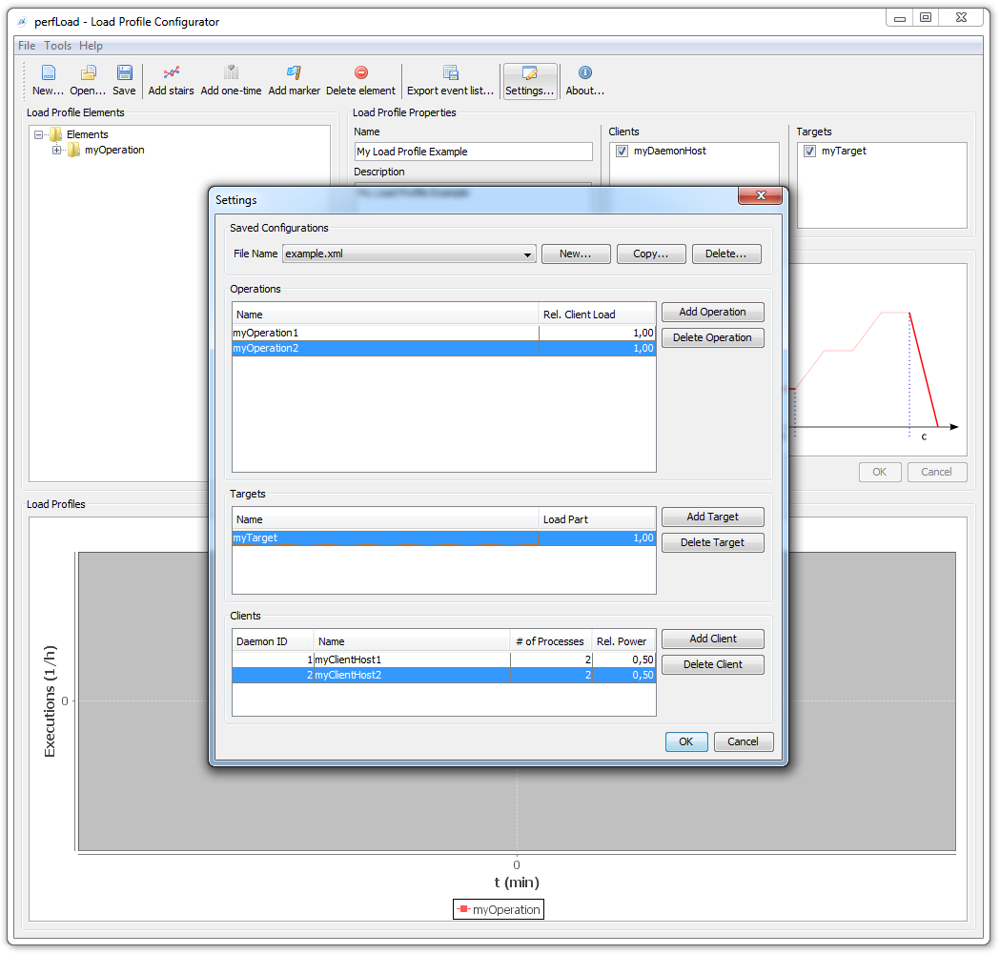

1. Overview
perfLoad offers powerful whitebox testing features to analyze not only client-side response times but also allows the user to capture server-side execution times and to monitor system metrics on all participating hosts. In addition, it provides the complete picture as an easy to read HTML report containing a sophisticated visual analysis of the measurings.

Main Features
-
Whitebox load and performance testing including client- and server-side measurings and system metrics
-
Support for complex load profiles including a visual editor
-
Full HTTP support
-
Support for custom request types
-
Load test driver development in Java
-
Central control
-
Full-featured reporting
Getting Started
For a quick start, a complete demo setup is available which installs all perfLoad components and a reference application on your local machine. This should get you started quickly in a matter of minutes and help you set up real-world testing scenarios for your applications.
Read on…
-
Getting Started - Get up and running quickly using the demo setup.
-
Complete Feature List - Find out all about perfLoad’s amazing features.
-
Components - Get to know perfLoad’s components.
-
Installation - Learn how to set up and configure everything for real-world scenarios.
-
Analyzing perfAlyzer Reports - Learn about reporting features and how to interpret reports.
-
Community - Need help? Want to get involved?
2. Getting Started
In order to get started quickly with perfLoad and to demonstrate how everything works together, a demo setup is available that installs a complete perfLoad environment including all components together with a reference application on your local machine.
It includes a sample load test driver and several sample testplans which you may run and study in order to get familiar with perfLoad.
Installation
-
Make sure
JAVA_HOMEis set to Java 7 (JDK or JRE). -
Download (link will follow once published) the demo installer and unzip it to some directory of your choice. You will find there a directory named
demo-installer. -
Open a command prompt in this directory and run
DemoInstaller.cmdor./DemoInstaller, depending on your operating system. The installer will then download and configure all components. You will be prompted for the demo installation directory. You may accept the default or enter a directory of you choice.
demo-installer> DemoInstaller.cmd
Initializing...
*******************************************************************
* *
* *
* Welcome to perfLoad's Demo Installer 1.0.0 *
* (c) 2013, mgm technology partners GmbH *
* *
* *
*******************************************************************
> Enter installation directory [../perfload-demo]:Running Sample Load Tests
-
Open a command prompt in the directory
supervisorin the directory where the demo was installed. -
Execute
runLoadTest.cmdor./runLoadTest. -
You will be prompted for a testplan to run:
perfload-demo\supervisor> runLoadTest.cmd
Initializing...
*******************************************************************
* *
* *
* Welcome to perfLoad's Supervisor 1.9.1 *
* (c) 2013, mgm technology partners GmbH *
* *
* *
*******************************************************************
No tentant specified. Running in single-tenancy mode.
Please select the testplan you'd like to use:
1) testplan_browse_error.xml
2) testplan_browse_garbage.xml
3) testplan_CPUload.xml
4) testplan_garbage.xml
5) testplan_long.xml
6) testplan_persistent_garbage.xml
7) testplan_short.xml-
You may execute any of these testplans. For a start, we’d recommand to select
testplan_short. It runs about ten minutes.
That’s it! Supervisor takes care of everything including startup and shutdown of the reference application.
Examining the Test Results
After successfully completing the test, perfAlyzer is launched creating a report, which is stored under perfalyzer\output\<testplan>\<timestamp>\05_report\report.html.
3. Features
Whitebox Testing Options
-
Measuring client-side response times
-
Measuring server-side execution times of specific Java methods using perfLoad Agent
-
Capturing system metrics, such as CPU, IO, memory, network, etc. using perfMon
Central Control with perfLoad Supervisor
-
Load test execution control
-
SSH communication with participating hosts
-
Data collection using SCP
-
Hooks for custom scripting, e. g. for starting up or shutting down the system under test.
Load Test Driver Options
-
Load test driver development in Java with support for JSR 330 dependency injection
-
Support for all HTTP methods and thus for any kind of HTTP requests (SOAP, REST, AJAX)
-
Support for custom "request types" (e. g. for calling Java Applet code, calling shell scripts, etc.)
-
Configurable waiting times between requests
-
Fully parameterizable request flows
-
Tests driven by load profiles making client load exactly follow predefined curves
-
Combination of different request flows into a single load profile
-
Orchestration of load profile executions across multiple client hosts/processes
-
Support for extraction of response headers and details from responses
-
Support for validation of response content and status codes
Visual Creation of Load Profiles with perfLoad Load Profile Editor
Evaluation and Reporting with perfAlyzer
-
Full-featured reports including client- and server-side measurements, percentile calculation, response time distribution, system metrics, garbage collection, test history, etc.
4. Components
perfLoad consists of a number of components which are explained below.
4.1. Console
The console controls load test execution. It distributes testplans, load profiles, and driver jars to the daemons and runs the test. |
4.2. Daemon
A daemon is little server between the console and the clients. A daemon spawns the client processes that execute the load test driver. |
4.3. Client
A client process executes the load test driver. Each event in a load profile triggers a new client thread at the specified time executing the operation specified by the load profile event. |
4.4. perfMon
The monitoring tool perfMon should be installed on all participating hosts. It captures system metrics, such as CPU, memory, IO, network, etc. and writes them to a file. |
4.5. Load Profile Editor
A Swing application for visually creating load profiles. |
4.6. Agent
The perfLoad Agent is a Java agent which instruments the byte code in order to weave in measuring hooks. This solution is much more elegant than AOP because it does no require the development of project-specific aspects. The agent only requires a config file in JSON format in order to define methods that should be instrumented. The agent also captures exceptions that occur in instrumented methods. |
4.7. perfAlyzer
Reporting solution that runs out-of-the-box with zero or little extra configuration. Creates full-featured HTML reports including client- and server-side measurings, percentile calculation, response time distribution, system metrics, garbage collection, test history, etc. |
4.8. Supervisor
A Gradle script and a few Groovy classes for controlling everything:
|
5. Installation
The various perfLoad components need to be installed on the participating hosts. All components must be installed under a common directory on each host, which will subsequently be referred to as PERFLOAD_HOME. An environment variable with this name is, however, not necessary.
A Note up front
-
Installing the components always involves unzipping a distribution. It is advisable to unzip the distributions directly on the target systems. This avoids file corruption during SCP transfer of unzipped distributions (e. g. *.dll and \*.so file in perfMon) and creates execute permissions for shell scripts automatically.
-
It is always safe to unzip a newer version over an existing installation. All files that require user changes have
.defaultin their names and must be renamed upon installation. So you can always diff your adapted config files with the default ones after an update and make necessary adjustments, if need be.
5.1. Installing Daemons and Clients
-
Requires Java 7
-
Unzip the perfLoad Client distribution to
PERFLOAD_HOMEon all client hosts. -
Unzip the perfLoad Daemon distribution to
PERFLOAD_HOMEon all client hosts. -
JAVA_HOMEmust be set to a Java 7 (JDK or JRE). Asetenv.cmd/setenv.shmay be added to the daemon directory in order to setJAVA_HOME. It will be picked up if present.
5.2. Installing perfMon
-
Requires Java 6
-
Unzip the perfMon distribution to
PERFLOAD_HOMEon all hosts where you wish to run perfMon during load tests. -
JAVA_HOMEmust be set to a Java 6 or higher (JDK or JRE). Asetenv.cmd/setenv.shmay be added to the daemon directory in order to setJAVA_HOME. It will be picked up if present.
5.3. Installing the Console
-
Requires Java 7
-
Unzip the perfLoad Console distribution to
PERFLOAD_HOMEon the controller host. -
JAVA_HOMEmust be set to a Java 7 (JDK or JRE). Asetenv.cmd/setenv.shmay be added to the daemon directory in order to setJAVA_HOME. It will be picked up if present. -
Copy the driver jar and any additional dependencies to the folder
test-lib. -
Copy testplan files to the folder
testplans. -
Copy load profile events files to the folder
testplans/loadprofiles.
5.4. Installing the Agent
-
Requires Java 6
-
Unzip the perfLoad Agent distribution to
PERFLOAD_HOMEon the application server hosts. -
Rename
perfload-agent.default.jsontoperfload-agent.jsonand edit it as specified below.
For each method to be measured, add a JSON object to the file, the key being the fully classified class name of the class that contains methods to measure. Each class name JSON object must in turn contain any number of JSON objects for methods to measure, the keys being the method names and the values being lists of JSON arrays with method parameters. Specifying method parameters allows to distinguish between overloaded methods. If an empty list is specified, any, potentially overloaded, method with the name of the key is instrumented.
The agent can also instrument entry points of Web applications, i. e. servlets or filter. This enables the agent to match client requests and server-side measurings because perfLoad sends custom HTTP headers which the agent can extract. If your application has multiple entry points (e. g. multiple filters that are chained), only the first entry point relevant for a request should be instrumented. It is suggested the entry points be always configured.
Sample for an agent config file
{
'entryPoints': {
'servlets': ['com.foo.web.FooServlet'],
'filters': ['com.foo.web.FooFilter']
},
'instrumentations': {
'com.foo.web.Foo': {
'doSomething': [[], ['int'], ['long', 'long']],
'doSomethingElse': []
},
'com.foo.web.Bar': {
'doIt': [[java.lang.Integer]],
'doItAgain': []
}
}
}In order to activate the agent in your application server, add the following VM-Parameter:
-javaagent:/path/to/agent/perfload-agent.jar5.5. Installing the Supervisor
-
Requires Java 7
-
Unzip the perfLoad Supervisor distribution to
PERFLOAD_HOMEon the controller host. Note, the Supervisor must be installed on the same host as the Console. -
JAVA_HOMEmust be set to a Java 7 (JDK or JRE). Asetenv.cmd/setenv.shmay be added to the daemon directory in order to setJAVA_HOME. It will be picked up if present. -
Rename all files in directory
confmatching the pattern.default.by removing ".default" from the file name. -
Edit the config files in the folder
confas described below.
Editing SupervisorConfig.groovy
The file SupervisorConfig.groovy contains settings for the Supervisor that are not specific to load tests. The file is in a format that can be read by Groovy’s [ConfigSlurper](http://groovy.codehaus.org/ConfigSlurper). The following table lists all properties for this file. Note that, unlike Java properties, the values are real types, not just strings.
| Property | Description | Type |
|---|---|---|
|
The timeout in minutes that the console will wait after the last test thread was started before aborting the test. Set to |
|
|
Specifies whether the Supervisor should perform a clean-up (e. g. delete old log files) before executing a load test. This should normally be set to |
|
|
Specifies whether the Supervisor should start configured servers before executing a load test. |
|
|
Specifies whether the Supervisor should shutdown configured servers after executing a load test. |
|
|
Specifies whether the Supervisor should collect test results after executing a load test. |
|
|
Specifies whether the Supervisor should run project specific targets before and after a load test. |
|
|
Automatically runs perfAlyzer after the test |
|
|
If |
|
Editing LoadTestConfig.groovy
The file LoadTestConfig.groovy contains configurations for all hosts participating in load tests. The file is in a format that can be read by Groovy’s [ConfigSlurper](http://groovy.codehaus.org/ConfigSlurper). The following table lists the properties for this file. Note that, unlike Java properties, the values are real types, not just strings. As the configuration is structured as nested maps, the table also shows parent-child relationships.
| Property | Parent | Description | Type |
|---|---|---|---|
|
Root for host configurations. |
|
|
|
|
A map representing a specific host configuration. |
|
|
|
The username for SSH access. |
|
|
|
The password for SSH access (optional). |
|
|
|
The certificate for public key authentication (optional). |
|
|
|
The base directory for all perfLoad components on this host. |
|
|
|
The OS family of this host. |
|
|
|
Optional parameter that be set if this is a client host that runs perfLoad daemons and client processes. Specifies the id of a daemon as configured in the load profile. |
|
|
|
Optional parameter that must be |
|
|
|
A list of SSH commands that should be executed on this host before a load test, e. g. to start up application servers. |
|
|
|
A list of SSH commands that should be executed on this host after a load test, e. g. to shut down application servers. |
|
|
|
A map of archiving configurations that specify what files perfLoad should zip up and collect after a load test. |
|
|
|
A map representing a specific archiving configuration. |
|
|
|
The directory that contains files to be archived. |
|
|
|
A wildcard pattern matching files to be archived. |
|
|
|
The name of the zip file to create. |
|
|
|
Specifiey whether the files (including the zip file) should be deleted before a test if they exist. May be left out otherwise. |
|
The following example should make this clearer:
Example for LoadTestConfig.groovy
hostConfigs {
myClientHost1 {
user = 'myuser'
password = 'mypass'
perfLoadHome = '/home/myuser/perfload'
osfamily = 'unix'
daemonId = 1
perfmon = true
}
myClientHost2 {
user = 'myuser'
password = 'mypass'
perfLoadHome = '/home/myuser/perfload'
osfamily = 'unix'
daemonId = 2
perfmon = true
}
myAppServerHost1 {
user = 'myuser'
password = 'mypass'
perfLoadHome = '/home/myuser/perfload'
osfamily = 'unix'
perfmon = true
startup = [[dir: '/dir/to/appserver/bin', executable: './myapp.sh'], args: ['start']]
shutdown = [[dir: '/dir/to/appserver/bin', executable: './myapp.sh', args: ['shutdown']]
archiving {
appServerLogs {
dir = '/dir/to/appserver/logs'
files = '*.log'
zipName = 'appserver-logs.zip'
cleanup = true
}
}
}
myAppServerHost2 {
user = 'myuser'
password = 'mypass'
perfLoadHome = '/home/myuser/perfload'
osfamily = 'unix'
perfmon = true
startup = [[dir: '/dir/to/appserver/bin', executable: './startup.sh']]
shutdown = [[dir: '/dir/to/appserver/bin', executable: './shutdown.sh']]
archiving {
appServerLogs {
dir = '/dir/to/appserver/logs'
files = '*.log'
zipName = 'appserver-logs.zip'
cleanup = true
}
}
}
myDbHost {
user = 'myuser'
password = 'mypass'
perfLoadHome = '/home/myuser/perfload'
osfamily = 'unix'
perfmon = true
}
}Adding project-specific targets
The Supervisor can execute project-specific tasks before and after a load test. The file ProjectTargets.gradle must be placed in the Supervisor’s installation directory. It must contain the tasks before, after, and performSystemCheck. The latter one can be used to check the availability of the system, e. g. by calling a URL.
// custom config object, if necessary
// myProjectConfig = SupervisorUtils.loadConfig(tenant, 'ProjectTasksconfig.groovy')
task before(description: 'Executes project-specific tasks before the load test') << {
}
task after(description: 'Executes project-specific tasks after the load test') << {
}
task performSystemCheck(description: 'Checks that everything is up and running') << {
/*
* In order to fail this task, e. g. ant.fail() may be called
*/
}|
Note
|
An upcoming version of the Supervisor will be able to distribute all components to the participating hosts so that everything can be configured in one central place and then be installed automatically. |
5.6. Installing the Load Profile Editor
-
Requires Java 7
-
Unzip the perfLoad Load Profile Editor distribution to
PERFLOAD_HOMEon the controller host. -
JAVA_HOMEmust be set to a Java 7 (JDK or JRE). Asetenv.cmd/setenv.shmay be added to the daemon directory in order to setJAVA_HOME. It will be picked up if present.
6. Implementing Load Tests
A typical perfLoad set up contains several perfLoad Daemons that run on participating client hosts. A daemon acts as a server between the perfLoad Console and the actual perfLoad Client processes. There is always one daemon per client host. Each daemon triggers client processes on the same machine which in turn spawn threads that execute the load test driver.
Definition of Terms
Before getting into the details, the following table defines a few key terms that are necessary to understand perfLoad.
| Term | Definition |
|---|---|
|
The piece of software that is executed during a load test. It acts as a client to the system under test. A load test driver can be customized by load test implementers. |
|
perfLoad usually executes multiple client threads per client process. Each client thread executes the load test driver. The |
|
|
|
perfLoad Web tests always execute a list of predefined requests. A request flow is an XML file that contains a list of such predefined request templates. Request flows may be fully parameterized. At runtime request templates are transformed into executable requests. |
|
The load profile, which may be created using perfLoad’s |
|
The testplan is a little XML file which tells perfLoad which load profile to execute, specifies load test driver jar files to distribute to the clients, and allows to set additional properties for the test. |
perfLoad Client Internals
perfLoad is not limited to Web load tests. Anything can be implemented. So, in the following, we’ll see how perfLoad clients work in general. Later on, we’ll look at how Web load tests are implemented.
Load Tests in General
The following sequence diagram shows the basic scenario, which is common to all load tests.
image:sequence-diagram_test-driver.png
The subsequent sections describe the involved classes in detail.
Class com.mgmtp.perfload.core.client.LtProcess
The class com.mgmtp.perfload.core.client.LtProcess is the main entry point for a load test client process. It submits com.mgmtp.perfload.core.client.LtRunner implementations to an ExecutorService, which is actually responsible for creating test threads. Events are triggered on process start and finish. Implementers can react on these events for initialization and clean-up tasks (e. g. shutdown of connection pools common to all threads).
Class com.mgmtp.perfload.core.client.util.concurrent.DelayingExecutorService
This class extends java.util.concurrent.AbstractExecutorService. It allows tasks to be executed after a given delay. This is necessary for load profile execution. Internally, it maintains a completion queue, so finished tasks may be taken out of this queue as soon as they are done. This allows for a quick reaction on possible execution errors so that, depending on the type of exception, tests can be aborted early. The size of the thread pool is not limited because the number of threads needed for load profile execution is not available ahead of time. However, idle threads may die when they are not needed anymore. Warnings are logged if tasks are executed too late because of performance problems in the client process due to very high load.
Class com.mgmtp.perfload.core.client.runner.LtRunner
The class com.mgmtp.perfload.core.client.LtRunner is associated with an com.mgmtp.perfload.core.client.driver.LtDriver instance. It executes the LtDriver as many times as specified by the loops parameter. Before and after the whole execution as well as before and after each loop iteration, events are triggered. com.mgmtp.perfload.core.client.LtRunner is wrapped into a Runnable instance that is submitted to the executor service. Exceptions thrown during execution are wrapped and re-thrown as ExecutionException when get() is called on the resulting Future. When the above-mentioned completion queue is polled exceptions may be reacted on early and at a central place.
Interface com.mgmtp.perfload.core.client.driver.LtDriver
com.mgmtp.perfload.core.client.driver.LtDriver is merely an interface. Code that is to be executed during a load test must be implemented in the execute method.
Web Load Tests
Web load tests are naturally more complex. Requests must be executed, responses must be parsed. Certain values may have to be extracted from a previous response in order to replace placeholder tokens for the next request, and so on. In all these areas, projects may have special requirements. Thus, perfLoad provides sensible defaults and offers the necessary extensibility. The diagram below shows the general scenario for Web load tests starting out with com.mgmtp.perfload.core.client.LtRunner. The steps before that are the same as for simple load tests.
image:sequence-diagram_web-driver.png
Class com.mgmtp.perfload.core.web.WebLtDriver
The class com.mgmtp.perfload.core.web.WebLtDriver is the default com.mgmtp.perfload.core.client.driver.LtDriver implementation for Web load tests. It calls a com.mgmtp.perfload.core.web.flow.RequestFlowHandler which is responsible for any further processing.
Interface com.mgmtp.perfload.core.web.flow.RequestFlowHandler
A com.mgmtp.perfload.core.web.flow.RequestFlowHandler processes pre-recorded requests from an XML file. It replaces placeholder tokens in parameterized requests and calls appropriate +RequestHandler+s for processing requests. PerfLoad will provide a default implementation that may easily be extended, e. g. for loading project-specific test data from a database.
Interface com.mgmtp.perfload.core.web.request.RequestHandler
A com.mgmtp.perfload.core.web.request.RequestHandler executes requests. PerfLoad supports all HTTP methods. Custom request handlers may be configured.
Interface com.mgmtp.perfload.core.web.response.ResponseParser
A com.mgmtp.perfload.core.web.response.ResponseParser basically does what its name implies. Based on regular expressions, the default implementation can validate a response and extract replacement values for placeholder tokens from it.
Next Steps
After this general overview, we can continue delving in deeper:
6.1. Developing a Load Test Driver
A load test driver is the piece of software that is executed during a load test. It acts as a client to the system under test. It is basically just a jar file (or multiple jar files if further dependencies are needed). For simple tests, the jar needs to contain at least a properties file and a request flow file. For more advanced tests, custom Java classes will be required.
Initially, we’ll focus on Web load tests using com.mgmtp.perfload.core.client.web.WebLtDriver as driver implementation. Later on, we’ll look at calling scripts using com.mgmtp.perfload.core.client.driver.ScriptLtDriver and, finally, at implementing custom drivers.
6.1.1. Project Setup
For Maven users, add the following dependency to your driver project:
<dependency>
<groupId>com.mgmtp.perfload</groupId>
<artifactId>perfload-client</artifactId>
<version>insert current version</version>
</dependency>
<!-- Contains DriverTestRunner. Only needed during development. -->
<dependency>
<groupId>com.mgmtp.perfload</groupId>
<artifactId>perfload-test-utils</artifactId>
<version>insert current version</version>
<scope>test</scope>
</dependency>The following screenshot shows an example for a driver project in Eclipse:
image:project_structure.png
The following table quickly explains the files on the screenshot:
| Class | Description |
|---|---|
|
Guice module for the driver. Needs to be specified in the testplan |
|
Listener implementation for hooking into the request flow execution |
|
Contains the request flow |
|
CSV file containing test data |
|
Properties file |
|
Test class for debugging and testing the driver. |
A load test driver can be easily debugged and tested in an IDE using com.mgmtp.perfload.test.utils.DriverTestRunner. This class provides a static method that executes the driver once directly in the IDE without the need for the whole perfLoad framework.
DriverTestRunner.runDriver(new ExampleModule(new PropertiesMap()), "myOperation", "myTarget");6.1.2. Properties
The properties file perfload.utf8.props must be present in the classpath root of the driver jar. The file must have the extension .utf8.props which indicates that the file, unlike the old standard Java properties files, must be UTF-8-encoded. Java 6 added support for properties in UTF-8 format. The file extension is changed becaused Eclipse will by default always try to encode properties files in Latin-1 adding unicode escapes for non-Latin-1 characters. Internally, perfLoad uses the class com.mgmtp.perfload.core.common.util.PropertiesMap to handle properties.
The whole test execution in perfLoad is based on operations and targets. An operation defines what is to be executed, e. g. which request flow (see next section) for Web load test, and a target defines against which system (there may be multiple application servers) the operation is executed. The following example shows how operations and targets for a browsing and a checkout scenario of an online shop could be configured.
Properties Example
# two request flow for operation'browsing'; multiple comma-separated request flows may
# be specified, which are executed sequentially
operation.browsing.requestflows=requestflows/browsing1.xml,requestflows/browsing2.xml
# request flow for operation 'checkout'
operation.checkout.requestflows=requestflows/checkout.xml
# two target configurations, 'appserver01' and 'appserver02'
target.appserver01.host=http://myshop01.mgm-tp.com
target.appserver02.host=http://myshop02.mgm-tp.com
# custom properties may be added
my.custom.property=foo6.1.3. Request Flows
During a Web load test, perfLoad executes a number of pre-defined parameterizable HTTP requests that make up a so-called request flow. Multiple request flows may be specified for an operation which are then executed sequentially. The following XML file shows how a request flow is configured. Parameter values may be wrapped into CDATA blocks if necessary. Different request types are shown exemplarily.
Request Flow Example
<?xml version="1.0" encoding="UTF-8"?>
<requestFlow>
<request type="GET" uri="/home" />
<request type="POST" uri="/login">
<param name="username">${username}</param>
<!-- use CDATA blocks if necessary -->
<param name="password"><![CDATA[${password}]]></param>
</request>
<request type="PUT" uri="/test">
<body><![CDATA[some body content, might be XML or JSON]]></body>
</request>
<request type="POST" uri="/test/42">
<body resourcePath="body.txt" resourceType="text" />
</request>
<!--
Uses a uri alias so requests are grouped under this alias
in the reponse time distribution report.
-->
<request type="POST" uri="/image/${id}" uriAlias="Image Upload">
<header name="Content-Type">image/png</header>
<body resourcePath="logo.png" resourceType="binary" />
</request>
<!--
Note the use of '&' in the URL. otherwise XML validation would fail.
The value of the first parameter and the name of the second parameter are parameterized.
-->
<request type="GET" uri="/foo?param1=${value1}&${param2}=value2" />
<!-- same as the above, for GET request, the query string is created automatically -->
<request type="GET" uri="/foo">
<param name="param1">${value1}</param>
<param name="${param2}">value2</param>
</request>
<!-- Requests may be skipped. In this case, the skip parameter is itself parameterized -->
<request type="GET" uri="/bar" skip="${skip}" />
<request type="GET" uri="/rest">
<!-- add custom header -->
<header name="Content-Type">application/xml</header>
</request>
</requestFlow>Parameterization of Requests
The example above contains placeholder tokens in many places. In fact, any element atribute or content in the XML file is parameterizable. perfLoad uses Ant-style placeholder tokens, such as ${username}. Internally, perfLoad holds placeholders and their replacement values in a com.mgmtp.perfload.core.client.util.PlaceholderContainer which is confined to the current thread. Replacement values may either be extracted from responses (see next section) or added to the com.mgmtp.perfload.core.client.util.PlaceholderContainer programmatically. The latter can be done using an event listener (see the section on events below), e. g. using test data that come from e. g. a database or CSV files. At runtime, placeholder tokens are resolved just before executing a request.
Extracting Details from Responses
Response Body Extraction
Details may be extracted from HTTP responses in order to be stored in the com.mgmtp.perfload.core.client.util.PlaceholderContainer.
Detail Extraction Example
<?xml version="1.0" encoding="UTF-8"?>
<requestFlow>
<request type="GET" uri="/home">
<!-- extract value for placeholder 'foo' from response -->
<detailExtraction name="foo">
<![CDATA[foo=([^"]+)"]]>
</detailExtraction>
<!-- extract value for placeholder 'bar' from response -->
<detailExtraction name="bar">
<![CDATA[name="bar"\s+value="([^"]+)"]]>
</detailExtraction>
</request>
<request type="POST" uri="/next">
<!-- use extracted placeholder values in next request -->
<param name="foo">${foo}</param>
<param name="bar">${bar}</param>
</request>
</requestFlow>The detailExtraction element must have a regular expression pattern as text content that identifies what to extract. It may be wrapped into a CDATA block. The regular expression is applied against the response body using java.util.regex.Matcher.find(). The element can have the following attributes:
| Attribute | Description | Required |
|---|---|---|
|
The key under which the extracted value is stored in the |
yes |
|
The value is always extracted from a capturing group. This attribute identifies the index of the group. Defaults to |
no |
|
If |
no |
|
Default value to use if no subsequence matching the regular expression pattern is found in the response body. |
no |
|
By default, the result of the first match is extracted. If |
no |
Response Header Extraction
Response header may be extracted and store in the PlaceholderContainer as well. By default, the name of the headser is used as the placeholder name. An alternative placeholder name my optionally be specified. See example below.
Header Extraction Example
<?xml version="1.0" encoding="UTF-8"?>
<requestFlow>
<request type="GET" uri="/home">
<headerExtraction name="myFirstHeader" />
<headerExtraction name="mySecondHeader" placeholderName="myPlaceholder" />
</request>
</requestFlow>6.1.4. Validating Responses
A com.mgmtp.perfload.core.web.response.ResponseValidator is responsible for validating and parsing HTTP responses. The default implementation is the class com.mgmtp.perfload.core.web.response.DefaultResponseParser. It checks for allowed or forbidden HTTP status codes and error patterns, and can extract details from the response as described above. The com.mgmtp.perfload.core.web.response.DefaultResponseParser can be configured with properties. If a response is considered invalid, an com.mgmtp.perfload.core.web.response.InvalidResponseException is thrown, which causes the execution of the current request flow to be aborted (not the whole test, though!).
Checking HTTP Status Codes
Optionally, comma-separated lists of allowed or forbidden HTTP status code may be configured. Allowed and forbidden status codes must be mutually exclusive. Usually, it only makes sense to specify either allowed or forbidden status code, not both.
Example for the Configuration of Allowed and Forbidden HTTP Status Codes
responseParser.allowedStatusCodes=200
responseParser.forbiddenStatusCodes=404,500Checking the Response Body
Optionally, regular expression patterns may be configured marking a response invalid if a subsequence matching one of the patterns is found in the response body. Multiple pattern may be specified. They must be indexed starting at one.
Exaample for the Configuration of Error Patterns
# check for specific marker the app adds in case of an error
responseParser.errorPattern.1=<!--loadtest stop -->
# make sure the page is complete
responseParser.errorPattern.2=(?is)^((?!</html>).)*$The first one checks for the error marker <!--loadtest stop --> which is written to the response whenever an error occurs (e. g. a validation error due to invalid user input). The seconds one checks that the body contains a closing HTML tag making sure the complete response page was returned.
6.1.5. Test Modules
perfLoad supports JSR 330 dependency injection, which driver implementers may take full advantage of. The wiring for JSR 330 is done using Google Guice. A load test driver needs a Guice module which must be specified in the testplan (see [Creating a Testplan](Creating a Testplan)). perfLoad already comes with a pre-configured module for Web load tests com.mgmtp.perfload.core.web.config.WebLtModule which is sufficient for simple tests that are not parameterized with special test data. For more flexibility, a custom Guice module is required.
Custom Guice modules must inherit from com.mgmtp.perfload.core.client.config.AbstractLtModule. For Web tests, com.mgmtp.perfload.core.weg.config.AbstractWebLtModule should be subclassed. Custom modules for Web load tests must install com.mgmtp.perfload.core.web.config.WebLtModule and provide additional bindings as needed.
Module Example
public class ExampleModule extends AbstractLtModule {
public ExampleModule(final PropertiesMap testplanProperties) {
super(testplanProperties);
}
@Override
protected void doConfigure() {
// Custom bindings
}
}Module Example for Web Tests
public class ExampleWebModule extends AbstractWebLtModule {
public ExampleWebModule(final PropertiesMap testplanProperties) {
super(testplanProperties);
}
@Override
protected void doConfigureWebModule() {
install(new WebLtModule(testplanProperties));
// Custom bindings
}
}6.1.6. Scoping
JSR 330 provides a singleton scope, and, by default, objects are unscoped in Guice, i. e. new instances are created as requested. In addition to that, perfLoad implements a com.mgmtp.perfload.core.client.config.scope.ThreadScope. This allows it to confine objects to threads, i. e. to each execution of a operation/target combination. The com.mgmtp.perfload.core.client.config.scope.ThreadScope is cleaned up automatically after a test thread is done, so a thread’s state is cleared which is necessary because threads are pooled and may be reused. The annotation com.mgmtp.perfload.core.client.config.annotations.ThreadScoped can be used to mark classes that should have thread scope.
6.1.7. Events
perfLoad triggers a number of events which driver implementers may react on, e. g. in order to load test data for parameterized tests. The following event listener interfaces can be implemented:
-
com.mgmtp.perfload.core.client.event.LtProcessEventListener -
com.mgmtp.perfload.core.client.event.LtRunnerEventListener -
com.mgmtp.perfload.core.web.event.RequestFlowEventListener
Listeners may be registered as follows in the Guice module and are thus themselves subject to JSR 330 injection. For convenience, the class com.mgmtp.perfload.core.client.web.event.LtListenerAdapter is available which provides a dummy implementation of all three listener interfaces. Note that it is possible that listeners can be scoped. It is e. g. possible to make a listener thread-scoped, i. e. each driver execution gets its own listener confined to the current thread.
Registering Event Listeners
public class ExampleWebModule extends AbstractWebLtModule {
public ExampleWebModule(final PropertiesMap testplanProperties) {
super(testplanProperties);
}
@Override
protected void doConfigureWebModule() {
install(new WebLtModule(testplanProperties));
bindLtProcessEventListener().to(MyListener.class);
bindLtRunnerEventListener().to(MyListener.class);
bindRequestFlowEventListener().to(MyListener.class);
}
}6.1.8. Waiting Times
It is possible to configure waiting times at the following execution points during a test run:
-
Before the the start of each driver execution
-
Before each request (applies to Web load tests only)
The waiting time before each request is calculated using a com.mgmtp.perfload.core.client.util.WaitingTimeStrategy. The following implementations are available:
-
com.mgmtp.perfload.core.client.util.ConstantWaitingTimeStrategy -
com.mgmtp.perfload.core.client.util.EqualDistWaitingTimeStrategy -
com.mgmtp.perfload.core.client.util.BetaDistWaitingTimeStrategy
The default implementation used is com.mgmtp.perfload.core.client.util.ConstantWaitingTimeStrategy. It may be overridden in the test’s Guice module:
Setting a WaitingTimeStrategy
public class ExampleModule extends AbstractLtModule {
public ExampleModule(final PropertiesMap testplanProperties) {
super(testplanProperties);
}
@Override
protected void doConfigure() {
bind(WaitingTimeStrategy.class).to(EqualDistWaitingTimeStrategy.class);
}
}Waiting times are configurable using the following properties.
| Property | Description | Default |
|---|---|---|
|
The random time between 0 and this value each test thread waits before it executes the driver logic. This is useful for static tests only and guarantees for a certain ramp-up time. |
0 |
|
Constant waiting time before each request. |
0 |
|
Applies to |
none |
|
Applies to |
none |
|
Applies to |
none |
|
Applies to |
none |
|
Applies to |
none |
|
Applies to |
none |
The default waiting time is 500 ms between requests. In most cases, the defaults are just fine.
6.1.9. Custom Request Handlers
Out of the box, perfLoad supports all HTTP request types. For certain purposes it might be necessary to implement a custom request handler, e. g. for making calls into Applet code. The following code snippets show how a request handler is registered and configured in a request flow. In this case, the AppletRequestHandler uses reflection to call a method identified by the uri of the request.
Registering a Custom Request Handler
public class ExampleWebModule extends AbstractWebLtModule {
public ExampleWebModule(final PropertiesMap testplanProperties) {
super(testplanProperties);
}
@Override
protected void doConfigureWebModule() {
install(new WebLtModule(testplanProperties));
bindRequestHandler("APPLET").to(AppletRequestHandler.class);
}
}Example for a Request Flow with a Custom Request Handler
<?xml version="1.0" encoding="UTF-8"?>
<requestFlow>
<request type="GET" uri="/home" />
<request type="APPLET" uri="myAppletUri" />
</requestFlow>If necessary (should not really be the case!), it is possible to override perfLoad’s built-in request handlers using Guice' module overrides.
Example for Overriding the Request Handler for GET requests
public class ExampleWebModule extends AbstractWebLtModule {
public ExampleWebModule(final PropertiesMap testplanProperties) {
super(testplanProperties);
}
@Override
protected void doConfigureWebModule() {
// Install WebLtModule overriding the handler for GET requests.
Module module = Modules.override(new WebLtModule(testplanProperties))
.with(new AbstractWebLtModule(testplanProperties) {
@Override
protected void doConfigureWebModule() {
bindRequestHandler("GET").to(MyCustomGetRequestHandler.class);
}
});
install(module);
}
}6.1.10. Using the Script Driver
In order to create real-world scenarios, it can be interesting to call scripts that trigger some action during a load test. perfLoad has com.mgmtp.perfload.core.client.driver.ScriptLtDriver for this use case. In order to use the script driver, it must be configured in perfload.utf8.props, which is shown in the following table.
| Property | Description | Required |
|---|---|---|
|
The working directory for the new process. If not specified, the current directory is used. |
no |
|
Specifies whether the new process should get a fresh environment. Defaults to |
no |
|
Specifies an environment variable for the new process. |
no |
|
Commands to start the process, indexed starting at 1. The list of commands is passed to |
yes |
|
Specified whether the process' output should be redirected to the log of the client process. Defaults to |
no |
|
Prefix to use for the process’s log when log is redirected. |
no |
|
Specifies whether termination of the process should be awaited. Defaults to |
no |
Configuration Example
# the working directory for the new process
operation.myOperation.procInfo.dir=/home/foo/bar
# should the process inherit the environment or get a fresh one?
operation.myOperation.procInfo.freshEnvironment=true
# environment variable for the new process
operation.myOperation.procInfo.envVars.APP_OPTS=-Dfoo=bar
operation.myOperation.procInfo.envVars.MY_ENV_VAR=baz
# commands for the new process (starting at 1)
operation.myOperation.procInfo.commands.1=/bin/sh -c ./my_script.sh
operation.myOperation.procInfo.commands.2=-param1
operation.myOperation.procInfo.commands.3=-param2=42
# should the process' output be redirected to perfLoad's client log?
operation.myOperation.procInfo.redirectProcessOutput=true
# optional prefix to be used for the process's log when log is redirected
operation.myOperation.procInfo.logPrefix=myProc>perfLoad automatically selects the ScriptLtDriver if the properties contain keys starting with operation.<operation>.procInfo.
6.1.11. Creating a Custom Driver
Custom load test drivers must implement the interface com.mgmtp.perfload.core.client.driver.LtDriver.
public class MyCustomDriver implements LtDriver {
public void execute() throws Exception {
// custom driver logic goes here
}
}The driver must be registered in a Guice module under its own key. A com.mgmtp.perfload.core.client.config.DriverSelectionPredicate must be implemented that decides, based on the current operation and properties, if the driver is selected. When ever perfLoad executes an operation, it iterates over the selection predicates of registered drivers. The first match is selected. The iteration order is non-deterministic. The selection criteria should thus be distinct.
DriverSelectionPredicate selectionPredicate = new DriverSelectionPredicate() {
@Override
public boolean apply(final String operation, final PropertiesMap properties) {
// return true, if the driver is to be used
// for the specified operation and properties
return properties.containsKey("operation." + operation + ".myCustomDriver");
}
}
bindLtDriver("myCustomDriver").forPredicate(selectionPredicate).to(MyCustomDriver.class);6.2. Creating a Load Profile
One of perfLoad’s strength is the fact that it uses load profiles. A load profile consist of load profile events. Each events stands for exactly one execution of the load test driver for a specific operation and target at a specific time by a specific client process. The load profile define how the load is distributed across all client process on all participating client hosts. For each execution, a new client thread is spawn at the specified time, i. e. the load is guaranteed to follow the profile independently of the load on the system under test.
Load profiles can be created using perfLoad’s Load Profile Editor. The following series of screenshots explains this.
Initially, operations, targets, and clients need to be configured.


Now we can add load curve assignments for one or multiple operations. A load test may contain executions for one operation only, but combination tests executing multiple operations are supported as well.
image/lpe3.png[Load Profile Settings]
image/lpe4.png[Load Profile Settings]
image/lpe5.png[Load Profile Settings]
When load profile should now be safe and additionally, it must be exported as events file (extension .perfload). The events file must be copied to console/testplans/loadprofiles on the controller host.
6.3. Creating a Testplan
A testplan is a small XML file that puts together all the pieces necessary for performing a load test. As we have learned, we need a load test driver and a load profile. The testplan is the glue between the driver and the load profile. Multiple testplans may be created in order to run the same driver with different load profiles.
Testplan Example
<?xml version="1.0" encoding="UTF-8"?>
<testplan xmlns:xsi="http://www.w3.org/2001/XMLSchema-instance"
xsi:noNamespaceSchemaLocation="http://mgm-tp.github.io/perfload/schema/1.0/perfload-testplan.xsd">
<module>com.mgmtp.perfload.example.driver.ExampleModule<module>
<loadProfile>example.perfload</loadProfile>
<testJars>
<testJar>driver-example-1.0.0-SNAPSHOT.jar</testJar>
</testJars>
<!-- optional properties -->
<properties>
<property name="prop1">value1</property>
<property name="prop2">value2</property>
</properties>
<!-- optional JVM args for the client process -->
<jvmargs>
<jvmarg>-Dsysprop1=value1</jvmarg>
<jvmarg>-Dsysprop2=value2</jvmarg>
</jvmargs>
</testplan>Testplan Reference
| Element | Parent Element | Description | Required |
|---|---|---|---|
|
|
Root element. |
yes |
|
|
The fully qualified class name of the Guice module that configures the test. |
yes |
|
|
The path to the load profile events file. The file is search in subdirectory |
yes |
|
|
Lists jar files the driver needs in addition to those the perfLoad client provides anyways. |
yes |
|
|
A jar file the driver needs. Jar files are search relative to the console’s subdirectory |
At lease one. |
|
|
Container element for properties. |
no |
|
|
A property specific to the testplan. The value of the property must be specified as this element’s content. Testplan properties are merged with those in |
no |
|
|
Container element for additional JVM args for the client process. |
no |
|
|
A JVM argument for the client process. |
no |
Using XInclude in Testplans
XInclude is supported in testplan file, i. e. it is possible to extract test jars to a separate file. It is very common to have many testplans using the same driver. Thus, a separate file reduces redundancy and eases maintainance. Note the usage of the XInclude namespace.
<?xml version="1.0" encoding="UTF-8"?>
<testplan xmlns:xsi="http://www.w3.org/2001/XMLSchema-instance"
xmlns:xi="http://www.w3.org/2001/XInclude"
xsi:noNamespaceSchemaLocation="http://mgm-tp.github.io/perfload/schema/1.0/perfload-testplan.xsd">
<module>com.mgmtp.perfload.example.driver.ExampleModule<module>
<loadProfile>example.perfload</loadProfile>
<xi:include href="testJars.xml" />
</testplan><?xml version="1.0" encoding="UTF-8"?>
<testJars>
<testJar>driver-example-1.0.0-SNAPSHOT.jar</testJar>
<testJar>my-special-third-party-dependency.jar</testJar>
</testJars>6.4. A Complete Example
This page describes a simple example scenario that tests a returns Fibonacci servlet.
6.4.1. The Driver Code
The Guice Module
package com.mgmtp.perfload.example.driver;
import static com.google.common.collect.Maps.newHashMapWithExpectedSize;
import static org.apache.commons.io.IOUtils.lineIterator;
import java.io.IOException;
import java.io.InputStream;
import java.util.Map;
import org.apache.commons.io.LineIterator;
import com.google.inject.Provides;
import com.mgmtp.perfload.core.client.web.config.AbstractWebLtModule;
import com.mgmtp.perfload.core.client.web.config.WebLtModule;
import com.mgmtp.perfload.core.common.util.PropertiesMap;
public class ExampleModule extends AbstractWebLtModule {
public ExampleModule(final PropertiesMap testplanProperties) {
super(testplanProperties);
}
@Override
protected void doConfigureWebModule() {
bindRequestFlowEventListener().to(ExampleListener.class);
install(new WebLtModule(testplanProperties));
}
@TestData
@Provides
Map<String, String> provideTestData() {
ClassLoader cl = Thread.currentThread().getContextClassLoader();
try (InputStream is = cl.getResourceAsStream("testdata/fibonacci.txt")) {
Map<String, String> result = newHashMapWithExpectedSize(20);
for (LineIterator it = lineIterator(is, "UTF-8"); it.hasNext();) {
String line = it.nextLine();
if (line.startsWith("#")) {
continue;
}
String[] columns = line.split(";");
result.put(columns[0], columns[1]);
}
return result;
} catch (IOException ex) {
throw new IllegalStateException("Error reading test data.", ex);
}
}
}The module installs import com.mgmtp.perfload.core.web.config.WebLtModule as usual. Plus, it binds a map of test data that is initialized in a provider method and a listener that uses the map in order to select an entry for the current test thread. In this case, the test data is read from a simple text file. In a real-world scenario, a database could be used instead.
Qualifying Annotation for the Test Data Map
package com.mgmtp.perfload.example.driver;
import static java.lang.annotation.ElementType.FIELD;
import static java.lang.annotation.ElementType.METHOD;
import static java.lang.annotation.ElementType.PARAMETER;
import static java.lang.annotation.RetentionPolicy.RUNTIME;
import java.lang.annotation.Retention;
import java.lang.annotation.Target;
import javax.inject.Qualifier;
@Retention(RUNTIME)
@Target({ FIELD, PARAMETER, METHOD })
@Qualifier
public @interface TestData {
//
}The annotation TestData is used in order to further qualify the map. This is necessary if different maps of type Map<String, String> are bound. The annotation must itself be annotated with @Qualifier.
Listener for Loading Test Data
package com.mgmtp.perfload.example.driver;
import java.util.List;
import java.util.Map;
import java.util.Map.Entry;
import java.util.Random;
import javax.inject.Inject;
import javax.inject.Provider;
import javax.inject.Singleton;
import net.jcip.annotations.Immutable;
import net.jcip.annotations.ThreadSafe;
import com.google.common.collect.ImmutableList;
import com.mgmtp.perfload.core.client.util.PlaceholderContainer;
import com.mgmtp.perfload.core.client.web.event.LtListenerAdapter;
import com.mgmtp.perfload.core.client.web.event.RequestFlowEvent;
@Singleton
public class ExampleListener extends LtListenerAdapter {
private final Provider<PlaceholderContainer> placeholderContainerProvider;
private final List<Entry<String, String>> testDataEntries;
private final Random random = new Random();
@Inject
public ExampleListener(final Provider<PlaceholderContainer> placeholderContainerProvider,
@TestData final Map<String, String> testData) {
this.placeholderContainerProvider = placeholderContainerProvider;
this.testDataEntries = ImmutableList.copyOf(testData.entrySet());
}
@Override
public void beforeRequest(final RequestFlowEvent event) {
int index = random.nextInt(testDataEntries.size());
Entry<String, String> entry = testDataEntries.get(index);
PlaceholderContainer placeholderContainer = placeholderContainerProvider.get();
placeholderContainer.put("n", entry.getKey());
placeholderContainer.put("fibn", entry.getValue());
}
}The ExampleListener only implements the method beforeRequest. It randomly selects a test data entry and adds replacement values for the placeholder tokens n and fibn to the PlaceholderContainer. The class ExampleListener is bound as a Singleton and is annotated accordingly. The PlaceholderContainer is bound by perfLoad and has ThreadScope. Thus, it should not be injected directly, but a Provider<PlaceholderContainer> should be injected instead. Otherwise, its scope would effectively be widened to that of a Singleton. JSR 330 allows it to inject a provider instead of a direct instance making it possible to always get a correctly scoped object.
6.4.2. The Request Flow
Request Flow with two Requests
<?xml version="1.0" encoding="UTF-8"?>
<requestFlow xmlns:xs="http://www.w3.org/2001/XMLSchema-instance"
xs:noNamespaceSchemaLocation="http://mgm-tp.github.io/perfload/schema/1.0/perfload-request-flow.xsd">
<request type="GET" uri="/fibonacci">
<param name="n">${n}</param>
<detailExtraction name="fibn" >(${fibn})</detailExtraction>
</request>
<request type="POST" uri="/fibonacci">
<param name="n">${n}</param>
<detailExtraction name="fibn">(${fibn})</detailExtraction>
</request>
</requestFlow>This is a simple request flow that contains a GET and a POST request to the servlet. Upon execution, the placeholders are replaced. The servlet is supposed to return the +nth Fibonacci number as plain text. The expected result is then extracted from the response. Of course, this is a somewhat contrived example. In a real-world scenario, one would e. g. extract some id from the response that must be added as a parameter to the following request.
6.4.3. The Testplan
Fibonacci Testplan
<?xml version="1.0" encoding="utf-8"?>
<testplan xmlns:xs="http://www.w3.org/2001/XMLSchema-instance"
xs:noNamespaceSchemaLocation="http://mgm-tp.github.io/perfload/schema/1.0/perfload-testplan.xsd">
<module>com.mgmtp.perfload.core.test.client.TestClientModule</module>
<loadProfile>fibonacci.perfload</loadProfile>
<testJars>
<testJar>driver-example-1.0.0.jar"</testJar>
</testJars>
</testplan>7. Analyzing perfalyzer Reports
To be filled with life. Please bear with us…
8. Downloads
All perfLoad artifacts and distributions are available on Maven Central:
Maven Dependency for Load Test Driver Development
<dependency>
<groupId>com.mgmtp.perfload.core</groupId>
<artifactId>perfload-client</artifactId>
<version>insert current version</version>
</dependency>9. Tips and Tricks for Load Testing
To be filled with life. Please bear with us…
11. Need Help?
Join the discussion list:
12. Found a Bug?
Use the Github issue tracker:
13. Want to Get Involved?
We’ll be happy to accept pull requests. Here’s the list of Github repositories:
-
perfLoad Core (Console, client, and Daemon) https://github.com/mgm-tp/perfload-core
-
Load Profile Editor https://github.com/mgm-tp/perfload-loadprofiles
-
Logging Library https://github.com/mgm-tp/perfload-logging
-
Reference Application https://github.com/mgm-tp/perfload-ref-app